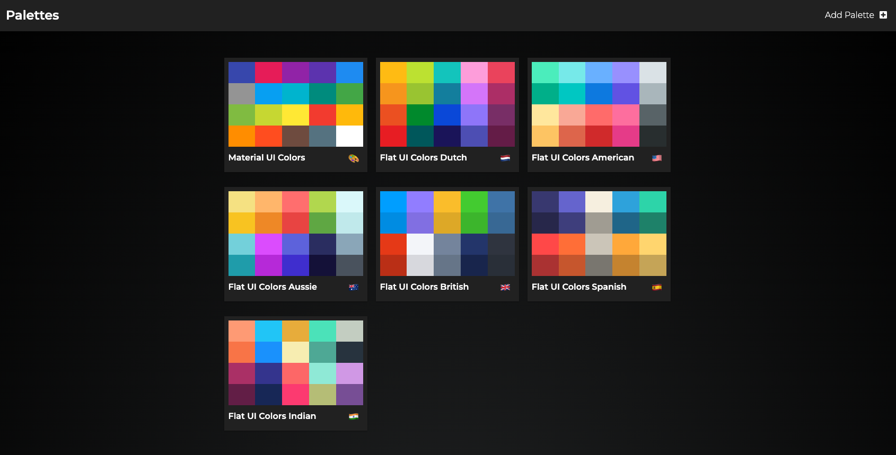
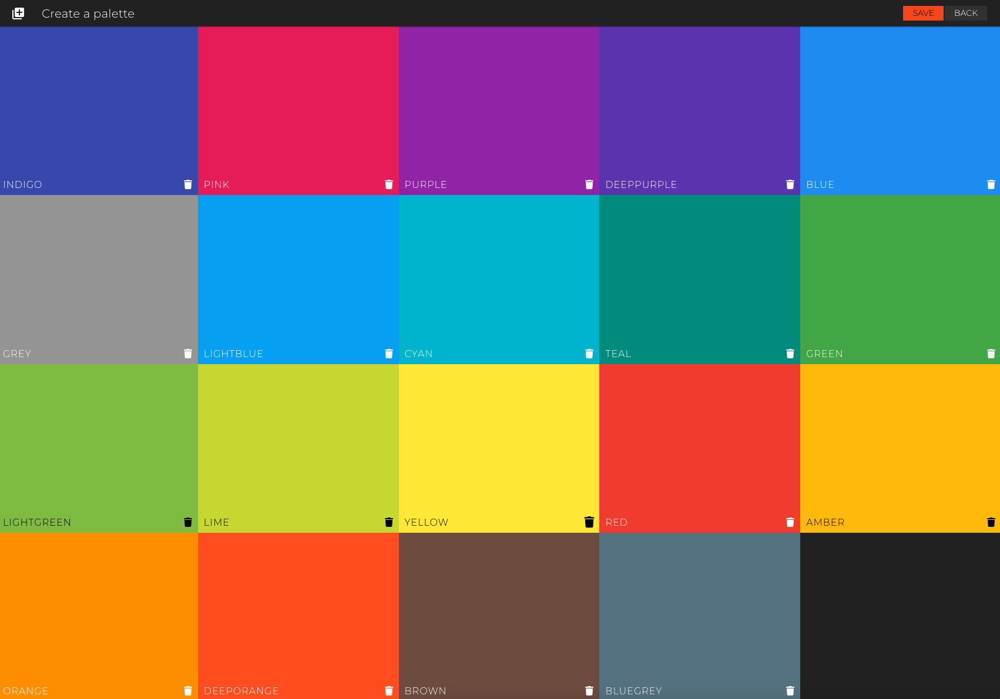
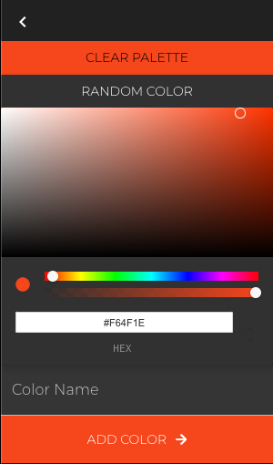
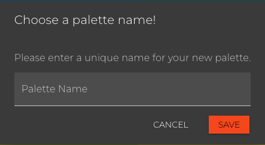
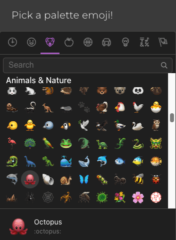

flowchart TD
User([User]) --> |HTTP Request| APIGateway[API Gateway]
APIGateway --> |Serves| FrontendApp[React App]
FrontendApp --> |HTTP/API Calls| APILayer[API Layer]
APILayer --> Auth[Authentication]
Auth --> Validation[Request Validation]
Validation --> BusinessLogic[Business Logic]
BusinessLogic --> |Database Queries| DataLayer[Data Access Layer]
DataLayer --> |CRUD Operations| DB[(Database)]
%% Response flow
DB --> |Data| DataLayer
DataLayer --> BusinessLogic
BusinessLogic --> Validation
Validation --> Auth
Auth --> APILayer
APILayer --> |JSON Response| FrontendApp
FrontendApp --> |UI Update| APIGateway
APIGateway --> |Rendered Page| User
classDef user stroke:#000,stroke-width:2px
classDef node stroke:#000,stroke-width:1px
class User user
class APIGateway,FrontendApp,APILayer,Auth,Validation,BusinessLogic,DataLayer,DB node
Background
In this notebook, we will explore the process of building a backend for a frontend project called Palletes (v-poghosyan.github.io/pallets). This was one of the first projects I created to learn React. Creating a backend for it will be a useful exercise in backend engineering (where we’re often given an existing frontend to integrate with). The goal is to create a robust API and data layers that can handle various operations such as creating, reading, updating, and deleting data.
The Palletes project is a web application that allows users to create and manage color palettes. The frontend is built using React, and we will be adding a Node backend using Express. In the process we will use OpenAPI to document our API, and we will also implement a database to store the color palettes.
We will also explore serverless backend options using AWS Lambda and DynamoDB, as well as deploying the backend to a cloud provider.
Grokking the Project Structure
Functional Requirements
First, let’s examine the functional requirements of the Palletes project. The frontend allows users to:
- View existing color palettes
- Create a new color palette (pick a name and emoji for it)
- Edit an existing color palette (add/delete colors)
- Delete a color palette





API Design
A potential schema to store a Palette can be found in the file seedPalettes.js. Here’s one example:
{
"paletteName": "Material UI Colors",
"emoji": "🎨",
"id": 1,
"colors": [
{ "name": "red", "color": "#F44336" },
{ "name": "blue", "color": "#2196F3" },
{ "name": "green", "color": "#4CAF50" },
{ "name": "yellow", "color": "#FFEB3B" },
{ "name": "purple", "color": "#9C27B0" }
]
}Currently, the user defined palettes are stored in the local storage of the browser. We need to find the places we store the palettes in the frontend code and wrap them with API calls to a backend. Each UI element is its own React component (as usual), so this should be straightforward.
We use Express.js to create a RESTful API layer for an application served with Node. The API will handle the following endpoints:
GET /api/palettes: Retrieve all palettesGET /api/palettes/:id: Retrieve a specific palette by IDPOST /api/palettes: Create a new palettePUT /api/palettes/:id: Update an existing palette by IDDELETE /api/palettes/:id: Delete a palette by IDGET /api/palettes/:id/colors: Retrieve colors of a specific palette by IDPOST /api/palettes/:id/colors: Add a color to a specific palette by IDDELETE /api/palettes/:id/colors/:colorId: Delete a color from a specific palette by IDPUT /api/palettes/:id/colors/:colorId: Update a color in a specific palette by ID
Backend Architecture
Here’s a potential architecture for the backend. Authentication, Request Validation, and Business Logic layers can be thought of as Middleware (what’s called between each API to Database call). The API Layer is the Express.js server that handles incoming requests and routes them to the appropriate handlers. The Data Access Layer interacts with the database to perform CRUD operations.
We can also add a Caching Layer to improve performance, especially for read-heavy operations. Redis is a popular choice, but for this project we will keep it simple and use local storage as the cache. In other words, before making a database call, we will check if the data is already in local storage. If it is, we will return it from there instead of hitting the database.
One other thing, we can move authentication and request validation to the API Gateway. This way, we can keep the business logic separate from the authentication and validation logic. This is a common pattern in backend development.
Benefits of API Gateway authentication include:
- Security perimeter: Authentication happens before requests reach your application code
- Reduced backend load: Unauthorized requests are rejected early
- Centralized authentication logic consistent across all services that need authentication: Implement once, secure all services
- Standard auth methods: Support for JWT, OAuth2, API keys, etc.
We those changes, our new server architecture looks like this:
flowchart TD
User([User]) --> |HTTP Request| APIGateway[API Gateway]
%% Auth and Validation at API Gateway
APIGateway --> |Authentication & Validation| APIGateway
APIGateway --> |Serves| FrontendApp[React App]
%% Local Browser Storage as Cache
FrontendApp <--> |Check/Store Cache| LocalStorage[(Local Browser Storage)]
%% API calls only if needed
FrontendApp --> |HTTP/API Calls if Cache Miss| APILayer[API Layer]
APILayer --> BusinessLogic[Business Logic]
BusinessLogic --> |Database Queries| DataLayer[Data Access Layer]
DataLayer --> |CRUD Operations| DB[(Database)]
%% Response flow
DB --> |Data| DataLayer
DataLayer --> BusinessLogic
BusinessLogic --> APILayer
APILayer --> |JSON Response| FrontendApp
%% Update cache with new data
FrontendApp --> |Store Response| LocalStorage
FrontendApp --> |UI Update| APIGateway
APIGateway --> |Rendered Page| User
classDef user stroke:#000,stroke-width:2px
classDef node stroke:#000,stroke-width:1px
class User user
class APIGateway,FrontendApp,LocalStorage,APILayer,BusinessLogic,DataLayer,DB node